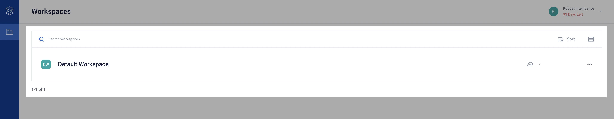
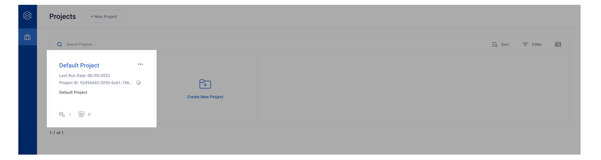
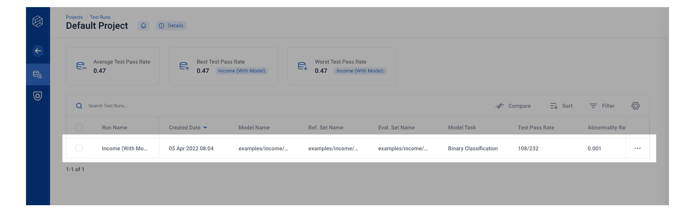
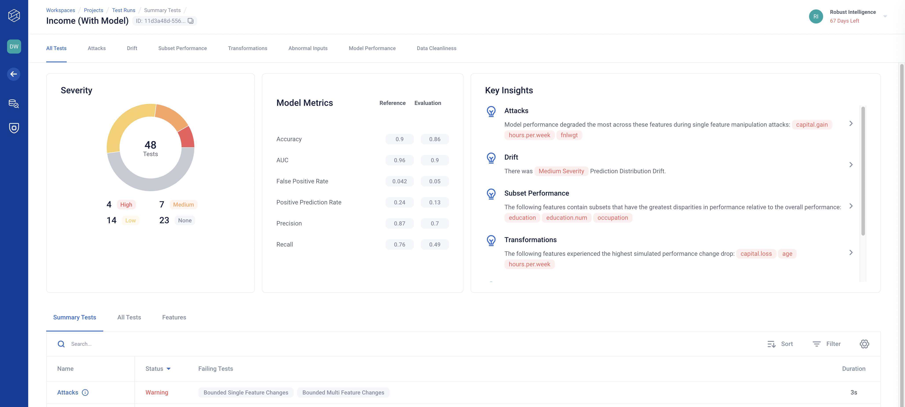

Running Your First AI Stress Test
Let’s begin by stress testing a binary classification model using the rime-engine CLI! This example uses a modified version of the Adult Census Income Dataset from Kaggle that we’ve included in the rime_trial/ bundle provided during installation.
Before beginning, make sure that you’ve completed Installation.
Executing Stress Tests From the Command Line
Be sure to run this example from the rime_trial/ directory so that local paths to datasets resolve correctly!
rime-engine run-stress-tests --config-path examples/income/stress_tests_model.json
If you run into issues, please refer to our Troubleshooting page for help! Additionally, your RI representative will be happy to assist — feel free to reach out!
Analyzing Results in the Web Client
This command runs a batch of stress tests that are designed to detect vulnerabilities in a ML pipeline. Begin by clicking into the “Default Workspace”.

The results appear in the Default project, which is available on all new RI Platform deployments.

Once the command completes, you should be able to see the test run in the Default project (see table below for URL).

From there, you can open the test run “Income (With Model)” and start exploring the results!

You can continue the rest of this example in Validating Your Model with AI Stress Testing.